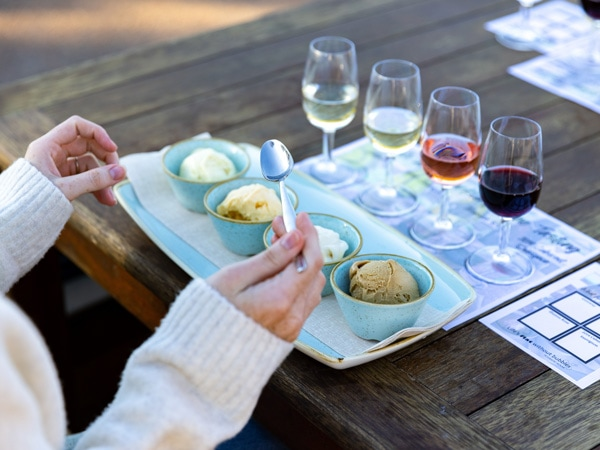
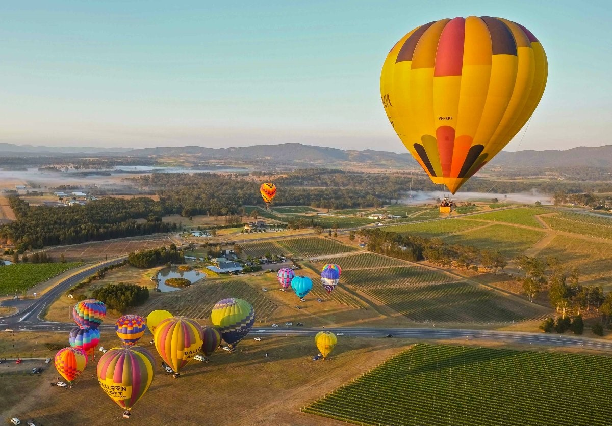
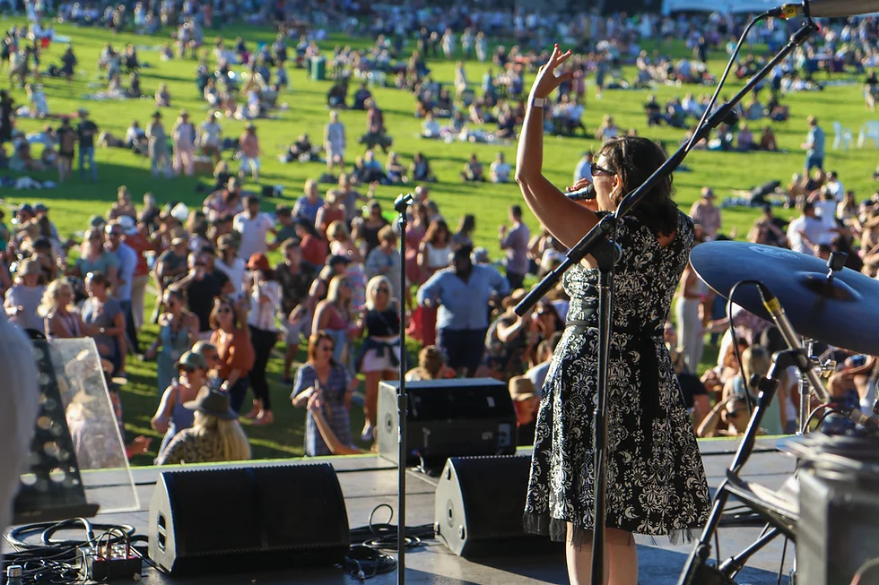
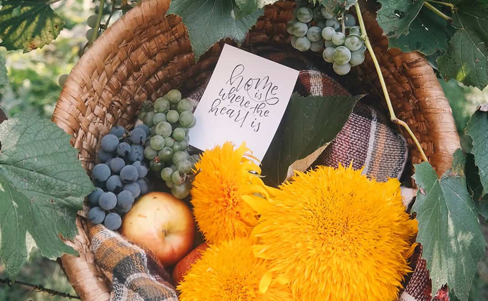

Discover the Hunter Valley’s beauty through our iconic vineyard tours, where you can watch the winemaking process. Discover renowned wineries such as Brokenwood Wines, Tyrell’s Wines and many more, where enthusiastic winemakers share their secrets behind exceptional wines.
As you wander through lovely vineyards, enjoy breathtaking views and guided tours that highlight the winemaking process. Many tours offer personalized experiences, including private tastings and behind-the-scenes access to wineries are just two examples of the customized experiences that many tours provide.
Enjoy your visit with a lovely culinary adventure through the region with local gourmet food pairings. Participate in special activities that honor the Hunter Valley’s distinctive offerings to make every visit unforgettable. Experience Hunter Valley’s enchantment, where each drink reveals a story!
EAT & DRINK
Hunter Valley is renowned for its world class wineries and gourmet food. Every meal is a distinctive experience because it highlights the finest of regional craftsmanship in everything from artisanal cheese to fresh produce.

EXPLORE HUNTER VALLEY EVENTS

HOT AIR BALLOONS
Enjoy the excitement of hot air ballooning over the stunning landscape in the Hunter Valley! Bright Balloons soar as the sun rises, showcasing the wide landscapes of lush vineyards, rolling hills and the peaceful countryside of Hunter Valley. This thrill encounter gives everyone who goes on this trip a new perspective on the beauty of the area and makes unforgettable memories.

CONCERTS & FESTIVALS
Discover the vibrant atmosphere of concerts and festivals in the Hunter Valley, where culture and music are brought to life against a breathtaking background. Throughout the years, the area holds a number of events that showcase both well-known and local performers. There is something for everyone to enjoy, ranging from large-scale music festivals to small-scale performances in vineyards. All who attend will have an amazing time at these events, which not only highlight the varied musical environment but provide an opportunity to enjoy the region's wines and fine dining.

MARKETS
Explore the vibrant Hunter Valley markets, typically held on weekends, where local businesses and artisans display fresh, seasonal produce and handcrafted goods. Enjoy live music and entertainment while sampling fine wines, locally produced meats and handmade cheeses. Anyone visiting the area should stop by these lively markets, which provide a glimpse of the local way of life and culture.
WORKSHOPS
Unleash your artistic side in the hunter Valley by participating in interactive programs that include anything from cooking lessons and wine blending to pottery and magazine. Learn from talented craftspeople while taking in the stunning surroundings. These encounters present a special chance to engage with the local way of life and depart with a souvenir of your trip.